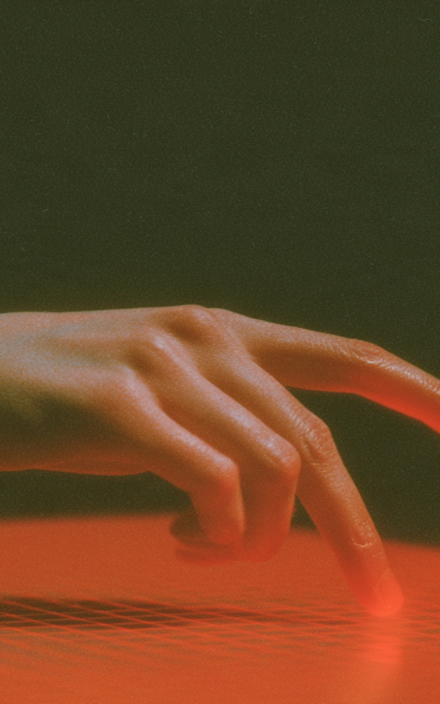
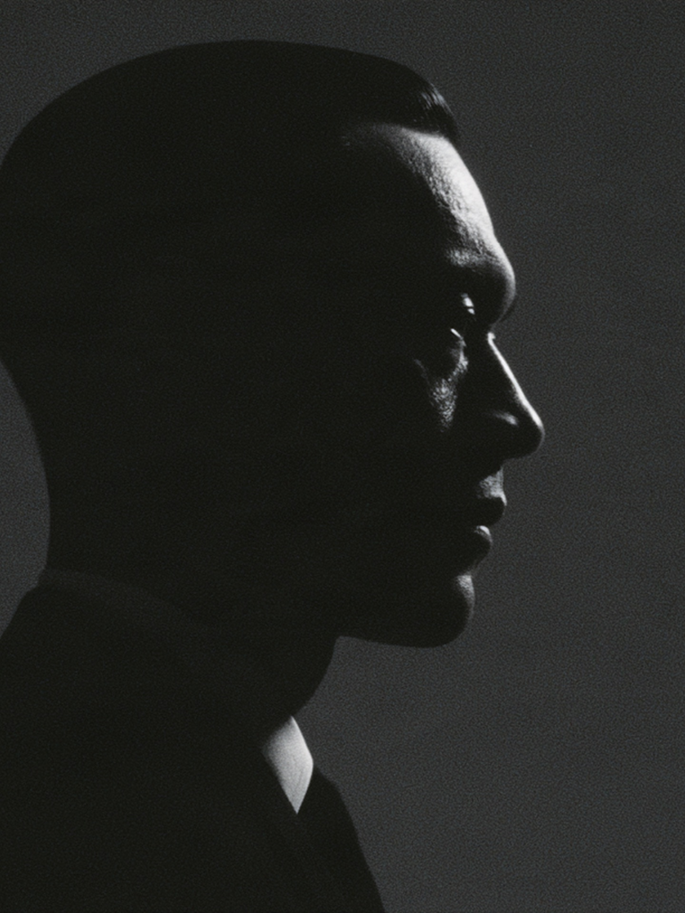
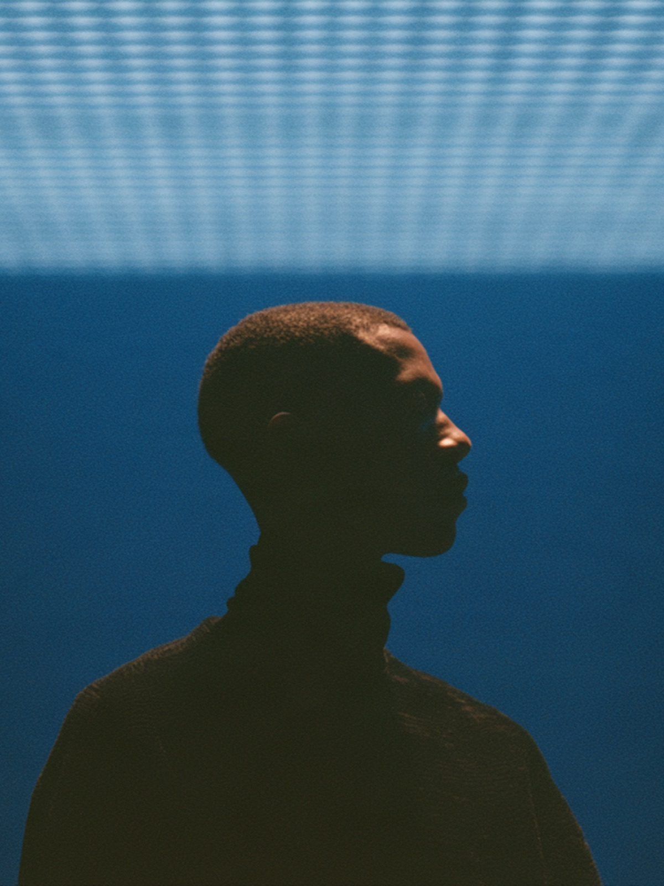
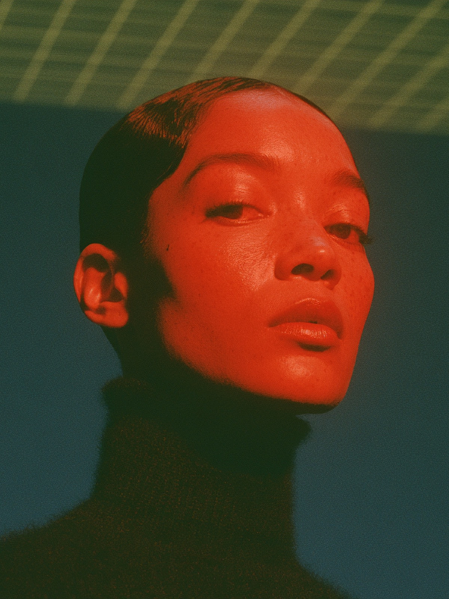

Watch
Learn from the world’s best, like the class above.


Access unlimited classes plus Certificates courses that take you deeper and put your new skills to work.
Go beyond the theory. Learn from the best, practice with instant feedback, and put your new skills to work on a real-world project.


Learn from the world’s best, like the class above.
Hands-on exercises with instant feedback.
Finish a real-world project and earn a certificate built with industry leaders.